---
---
<div class="nutanix-page--enterprise-cloud-infrastructure">
  <h1>Enterprise Cloud Infrastructure</h1>
  <div class="grid">
    <div class="unit one-third">
      <h2>Why</h2>
      
      <p>Invisible Infrastructure</p>
    </div>
    <div class="unit one-third">
      <h2>What</h2>
      
      <p>X86 Hyper-Converged Appliances</p>
    </div>
    <div class="unit one-third">
      <h2>How</h2>
      
      <p>Web-Scale</p>
    </div>
  </div>
</div>